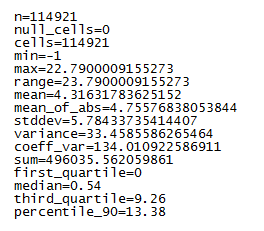

Statistiche¶
Il modulo calcola una serie di statistiche sul raster fornito in input dall’utente. Fornisce in uscita un file di testo con le statistiche. Le statistiche calcolate sono:
- n: numero totale di pixels;
- null_cells: numero totale di pixels nulli;
- cells: numero totale di pixels non nulli;
- min: valore minimo dei pixels dell’immagine;
- max: valore massimo dei pixels dell’immagine;
- range: range dei valori dei pixels dell’immagine;
- mean: valore medio dei pixels dell’immagine;
- mean_of_abs: valore minimo del valore assoluto dei pixels dell’immagine;
- stddev: deviazione standard dei valori dei pixels dell’immagine;
- variance: varianza dei valori dei pixels dell’immagine;
- coeff_var: coefficiente di variazione dei valori dei pixels dell’immagine;
- sum: somma dei valori dei pixels dell’immagine;
- first_quartile: primo quartile dei valori dei pixels dell’immagine;
- median: mediana dei valori dei pixels dell’immagine;
- third_quartile: terzo quartile dei valori dei pixels dell’immagine;
- percentile_n: n-esimo percentile dei valori dei pixels dell’immagine;
Esempio del contenuto del file di testo di output:

Input¶
Dati di input: selezionare il raster di input.
Selezionare la banda su cui calcolare le statistiche: selezionare la banda del raster di input su cui calcolare le statistiche.
Parametri¶
Percentile da calcolare: percentile da calcolare (da 1 a 99).
Output¶
Risultato: file di testo in cui salvare il risultato. L’estensione .txt va specificata.